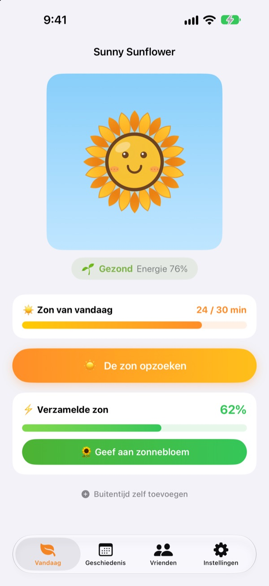
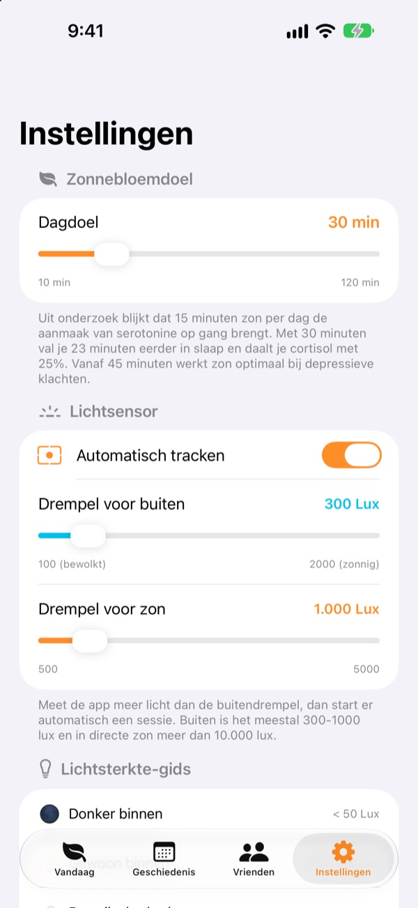
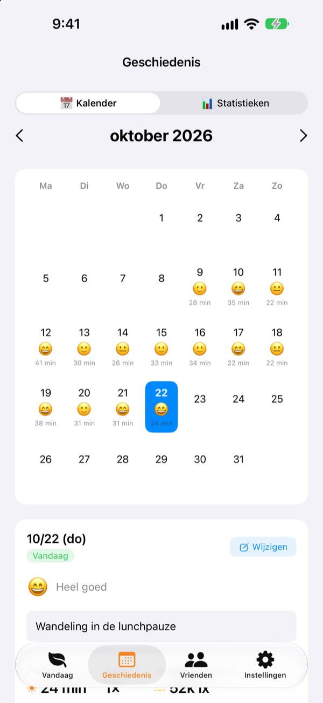
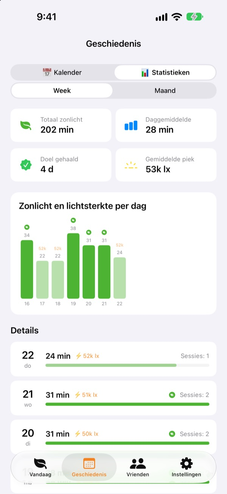

De zon van vandaag
laat je zonnebloem groeien
Zodra je buiten bent, telt je tijd in de zon vanzelf op. Geef de verzamelde zon aan je zonnebloem en hij staat er fris bij. Vergeet je hem een paar dagen, dan begint hij te verwelken.
Alle functies zijn gratis. Je gegevens blijven op je apparaat.

Verzamel wat zon
Kies hoe licht het is en hoe lang, vang wat zon en geef die aan een zonnebloem die al wat begint te hangen.
Hoeveel minuten zon heb je vandaag eigenlijk gehad?
Een paar stappen naar je werk, even snel naar buiten voor de lunch. Wie de hele dag binnen zit, merkt pas 's avonds dat er nauwelijks daglicht was. Sunny Sunflower zet je tijd buiten om in cijfers, en je zonnebloem wacht al op de wandeling van morgen.
Ga naar buiten, hij meet vanzelf
Tik op De zon opzoeken en ga naar buiten. De app schat de helderheid om je heen met de belichtingsgegevens van de camera aan de voorkant. Blijft het ongeveer 30 seconden zo licht als buiten, dan begint de registratie. Er worden nooit foto's gemaakt of bewaard.
Daarna gaat de sensor maar 20 seconden per 2 minuten aan om de batterij te sparen.

Zon en stemming, dag na dag
In de kalender krijgt elke dag zijn tijd in de zon, een stemmings-emoji en een korte notitie. Buiten geweest zonder te meten? Met Buitentijd zelf toevoegen voeg je 5 tot 120 minuten toe.

Je week en maand in één oogopslag
Week- en maandoverzichten laten zien op welke dagen je je doel haalde en hoeveel zon je gemiddeld krijgt. Stel een dagdoel in van 10 tot 120 minuten en zie meteen op het hoofdscherm hoeveel er vandaag nog ontbreekt.
Widgets op het beginscherm en het toegangsscherm, en het Dynamic Island, tonen de zon van vandaag en hoe je zonnebloem erbij staat.

In drie stappen aan de slag
- 1
Stel een dagdoel in
Standaard is het 30 minuten. In de instellingen kies je 10 tot 120.
- 2
Ga de zon in
Tik op
De zon opzoekenen ga naar buiten met de app open. Toegang tot de camera wordt maar één keer gevraagd. - 3
Voed je zonnebloem
Tik op
Geef aan zonnebloemom de verzamelde zon om te zetten in energie.
Zo wordt licht verzamelde zon
- Onder 300 lux
- Zwak licht: telt niet als tijd in de zon
- 300–1.000 lux
- Buiten/bewolkt: 1–3% per 10 minuten
- 1.000–10.000 lux
- Zon: 3–33% per 10 minuten
- Vanaf 10.000 lux
- Felle zon: meer dan 33% per 10 minuten
- Verzamelde zon
- minuten × gemiddelde lux ÷ 3.000 (maximaal 100% per keer)
- Energie van de zonnebloem
- daalt 2,5% per uur, ongeveer 60% per dag
De drempel voor buiten stel je in de instellingen in tussen 100 en 2.000 lux. Standaard is 300 lux.
Veelgestelde vragen
Hoe meet de app de zon?
De app schat de helderheid om je heen (de verlichtingssterkte) met de belichtingsgegevens van de camera aan de voorkant. Blijft het een tijdje zo licht als buiten, dan start de registratie vanzelf. Er worden geen foto's gemaakt of bewaard.
Kost het meten veel batterij?
Zodra de zon bevestigd is, blijft de sensor niet aan. Hij wordt elke 2 minuten ongeveer 20 seconden wakker om opnieuw te meten; de rest doet een simpele timer.
Mijn zonnebloem verwelkt steeds.
De zonnebloem verliest elk uur 2,5% energie. Verzamel zon en tik op Geef aan zonnebloem. Op een heldere dag is 15 tot 20 minuten in de volle zon genoeg voor een hele dag.
Ik was buiten, maar er is niets geregistreerd.
Gebruik Buitentijd zelf toevoegen onderaan het hoofdscherm om 5 tot 120 minuten toe te voegen. Komt de registratie op bewolkte dagen moeilijk op gang, verlaag dan de drempel voor buiten in de instellingen.
Hoe werkt de vriendenfunctie?
Als jij en een vriend dicht bij elkaar zijn (binnen zo'n 10 meter) en allebei de zon meten, maken jullie vanzelf verbinding. Met iemand nieuw bevestig je eerst dat jullie samen de zon in gaan, daarna gaat het automatisch. De bloemblaadjes kleuren vrolijk en krijgen in 3 dagen hun eigen kleur terug, en jullie tijd samen komt in het tabblad Vrienden. Jullie hebben allebei de app nodig, plus toegang tot Bluetooth en het lokale netwerk.
Is het echt gratis?
Ja. Geen advertenties, geen aankopen, alle functies inbegrepen. Vind je de app fijn, dan kun je een fooi geven, maar die ontgrendelt niets extra's.
Kan ik een back-up maken of mijn gegevens overzetten?
Alles blijft zonder server op je apparaat, en de laatste 90 dagen worden bewaard. Er is geen aparte export, maar je gegevens zitten in de gewone iPhone-back-up via iCloud of je computer.
Hoe wis ik al mijn gegevens?
Tik in de instellingen van de app op Gegevens wissen, of verwijder de app. Dit kan niet ongedaan worden gemaakt.
Waar meld ik een fout?
Mail naar het adres hieronder of open een issue op GitHub (github.com/M1zz/SunlightTracker/issues). Het model van je apparaat, de iOS-versie en wat er gebeurde helpen ons enorm. Meestal antwoorden we binnen een paar dagen.
Vragen of feedback? Mail naar leeo@kakao.com.